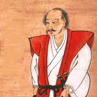

Miyamoto Musashi
Miyamoto Musashi (1584–1645) foi um dos mais famosos espadachins japoneses, conhecido por sua invencibilidade em duelos e sua filosofia de combate. Ele escreveu o renomado *"O Livro dos Cinco Anéis"*, que oferece lições sobre estratégia, combate e a vida em geral.
Filosofia de Musashi
Musashi acreditava em uma abordagem prática e sem dogmas para o combate e a vida. Sua filosofia enfatizava o controle da mente, a adaptação ao ambiente e a busca constante pela melhoria. Ele dizia que um verdadeiro espadachim não deve confiar em uma única técnica, mas deve ser capaz de se adaptar a qualquer situação.
O Livro dos Cinco Anéis
"O Livro dos Cinco Anéis" (ou *"Go Rin No Sho"*) é a obra mais famosa de Musashi. Escrito em 1645, o livro aborda os aspectos filosóficos e técnicos do combate. Ele é dividido em cinco partes: Terra, Água, Fogo, Vento e Vazio, cada uma representando um aspecto da estratégia e da vida.
Contato
Para mais informações sobre Musashi ou para entrar em contato, envie um e-mail para musashi@espada.com.